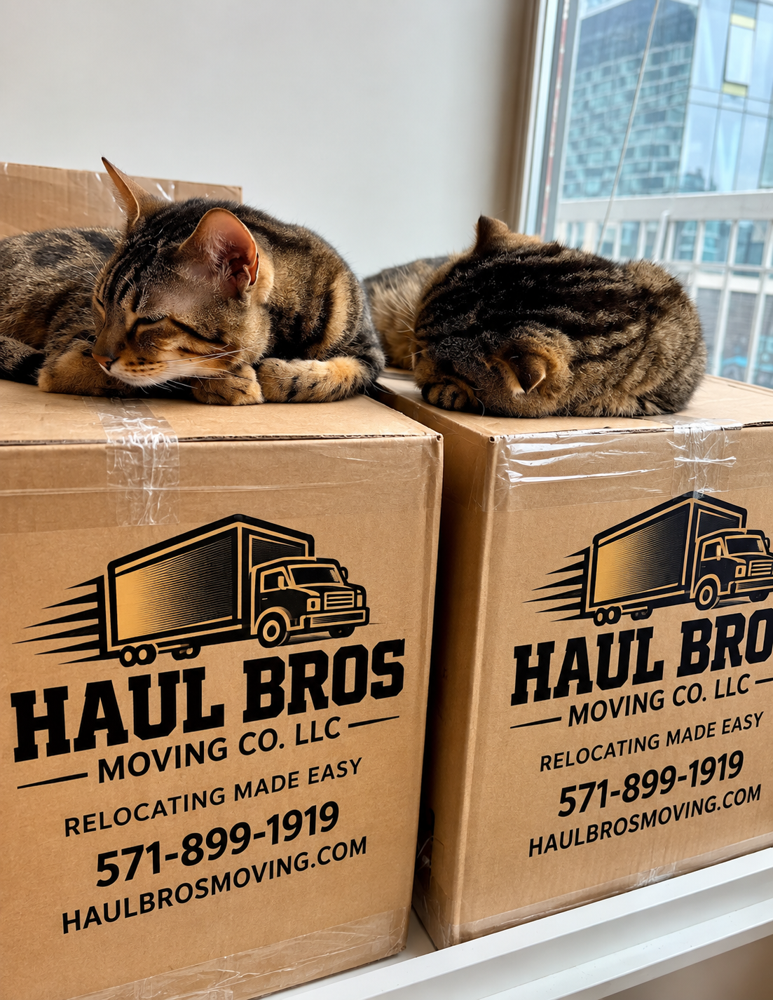

Moving from one townhouse to another might seem straightforward. After all, you're moving from one home to another, often within the same city.
But anyone who has moved a three-story townhouse in Woodbridge, Springfield, Centreville, Chantilly, or Manassas knows that townhouse moving comes with unique challenges.
Narrow staircases, heavy furniture, tight corners, multiple floors, limited parking, and HOA restrictions can make a townhouse move more complicated than expected.
Whether you're moving from a two-bedroom townhouse in Dale City to a new home in Lake Ridge or relocating a four-bedroom townhouse from Fairfax to Stafford, preparation makes a significant difference.
At Haul Bros Moving Co LLC, we help customers plan residential moves throughout Northern Virginia, including multilevel townhouse relocations.
In this guide, we'll explain how much townhouse movers cost, how to choose the right moving crew, how to prepare furniture and stairways, and how to make your move more efficient.
Quick Answer: How Much Does It Cost to Move a Townhouse in Northern Virginia?
Using Haul Bros Moving Co LLC's standard local moving rates, these illustrative scenarios can help you plan a budget:
| Townhouse Size | Example Crew | Planning Time | Illustrative Cost |
|---|---|---|---|
| Small 2-bedroom | 2 movers + truck | 3–5 hours | $554–$872 |
| Furnished 2-bedroom | 3 movers + truck | 4–6 hours | $873–$1,251 |
| 3-bedroom | 3 movers + truck | 5–8 hours | $1,062–$1,629 |
| Larger 3–4-bedroom | 4 movers + truck | 6–9 hours | $1,691–$2,438 |
These figures are calculated from Haul Bros' standard advertised rates and hypothetical durations. They are not verified regional market averages, guaranteed moving times, or binding estimates.
Actual costs depend on the furniture inventory, stairs, access, distance, crew size, packing requirements, and any additional services.
Need a townhouse moving quote in Northern Virginia? Contact Haul Bros Moving Co LLC at (571) 899-1919 or visit www.haulbrosmoving.com.
1. Why Is Moving a Townhouse Different From Moving an Apartment or Single-Family Home?
Townhouses often have two, three, or even four levels connected by interior staircases.
Unlike many single-story apartments, townhouse moves require transporting furniture and boxes between floors before loading the moving truck.
Common townhouse moving challenges include:
- Narrow staircases and landings.
- Sharp turns between floors.
- Large bedroom furniture upstairs.
- Heavy sofas in second-floor living rooms.
- Basement furniture and storage.
- Limited driveway space.
- Street parking restrictions.
- HOA or community moving requirements.
- Tight entryways and door frames.
- Furniture requiring disassembly.
For example, moving a sectional sofa from a second-floor living room may require more planning than moving the same sofa from a ground-floor apartment.
The furniture might need to be separated into sections, carefully maneuvered around corners, and protected before transportation.
The most important factor in a successful townhouse move is preparation—not simply the size of the moving truck.
2. How Much Do Townhouse Movers Cost in Northern Virginia?
Moving costs depend on the number of movers, total working time, and services required.
At Haul Bros Moving Co LLC, our standard local moving packages are:
Haul Bros Moving Co LLC — Moving Rates
| Moving Package | First 2 Hours | Each Additional Hour |
|---|---|---|
| 2 Movers + Truck | $395 | $159 |
| 3 Movers + Truck | $495 | $189 |
| 4 Movers + Truck | $695 | $249 |
| 2 Movers — Labor Only | $295 | $125 |
Our standard minimum booking is two hours.
These rates are company-specific and should be confirmed against the written estimate and any applicable regulatory tariff.
Example 1: Two-Bedroom Townhouse Move in Woodbridge
A customer is moving from a two-bedroom townhouse in Dale City to another townhouse in Lake Ridge.
The property has two levels, two beds, a sofa, a dining table, dressers, and approximately 30 moving boxes.
Assume two movers and a truck complete the move in four hours.
First two hours: $395 Additional two hours: $318
Illustrative total: $713
Example 2: Three-Bedroom Townhouse Move in Springfield
A family is relocating from a three-bedroom townhouse in Springfield to a new townhouse in Burke.
The home has three levels, multiple bedroom sets, a sectional sofa, dining furniture, office furniture, and packed boxes.
Assume three movers and a truck complete the relocation in six hours.
First two hours: $495 Additional four hours: $756
Illustrative total: $1,251
Example 3: Four-Bedroom Townhouse Move in Chantilly
A family is relocating from a four-bedroom townhouse in Chantilly to a larger home in Centreville.
The property has three levels, several bedroom sets, living room furniture, garage contents, and numerous boxes.
Assume four movers and a truck complete the move in eight hours, with the inventory fitting the planned truck arrangement.
First two hours: $695 Additional six hours: $1,494
Illustrative total: $2,189
A heavily furnished four-bedroom townhouse may require more than one truckload, additional time, or extra moving resources.
What Determines the Final Price?
The number of bedrooms is only a starting point.
A lightly furnished three-bedroom townhouse may cost less to move than a heavily furnished two-bedroom property.
The most accurate estimate comes from reviewing the complete inventory and access conditions.
3. How Many Movers Do You Need for a Townhouse?
Choosing the right crew size is one of the most important decisions when planning a townhouse move.
Two Movers
A two-mover crew may be appropriate for:
- Smaller two-bedroom townhouses.
- Minimal furniture inventories.
- Short local moves.
- Customers who have already packed everything.
- Properties with relatively manageable access.
Three Movers
A three-mover crew may be appropriate for:
- Moderately furnished two- or three-bedroom townhouses.
- Multilevel properties.
- Homes with heavy bedroom furniture.
- Moves requiring more efficient loading and unloading.
Four Movers
A four-mover crew may be appropriate for:
- Larger three- or four-bedroom townhouses.
- Heavily furnished homes.
- Multiple levels with substantial furniture.
- Moves involving large or heavy household items.
- Customers with limited moving-day windows.
Is It Cheaper to Hire Two Movers or Three?
Not always.
Two movers generally have a lower crew rate, but a larger team may complete some moves faster.
For example, using Haul Bros' standard pricing:
- Two movers working six hours: $1,031.
- Three movers working four hours: $873.
In this hypothetical example, three movers would cost $158 less.
However, adding a mover does not guarantee a particular reduction in working time.
The best crew is the one suited to your actual inventory, access conditions, and moving schedule.
4. Moving Furniture Down Narrow Townhouse Staircases
One of the most common townhouse moving challenges is transporting large furniture through narrow staircases.
Furniture that fits comfortably inside a bedroom may be difficult to remove through the stairway.
Common Problem Items
Sectional Sofas
Some sectionals separate into smaller pieces, while others require additional maneuvering.
King-Size Beds
Large bed frames may need disassembly before transportation.
Dressers
Heavy dressers can be difficult to maneuver around landings.
Reclining Sofas
Recliners and reclining couches may have bulky frames and removable components.
Desks and Bookcases
Tall or wide furniture may not fit through tight turns without disassembly.
Exercise Equipment
Treadmills and other exercise machines can require special handling because of their weight and dimensions.
How Professional Movers Handle Tight Staircases
Depending on the furniture, the crew may:
- Measure the item and available clearance.
- Remove detachable components.
- Disassemble qualifying furniture.
- Protect surfaces with appropriate materials.
- Use coordinated lifting and carrying techniques.
- Reassemble furniture at the destination.
Not every piece can be safely moved through every stairway.
For unusually large furniture, a pre-move assessment is important.
Should You Move Furniture Through a Window?
Moving large furniture through windows, balconies, or over railings can create significant safety risks.
Such work should not be attempted without a qualified specialist, suitable equipment, and a site-specific safety assessment.
In many cases, disassembly or an alternative furniture arrangement is safer.
5. Three-Story Townhouse Moving: What You Need to Know
Three-story townhouses are common throughout Northern Virginia.
A typical layout may include:
Ground Floor: Garage, entryway, basement, recreation room, or guest bedroom.
Second Floor: Kitchen, dining area, and living room.
Third Floor: Bedrooms, bathrooms, and laundry.
This arrangement can require repeated trips up and down staircases during a move.
Why Three-Story Moves Can Take Longer
Movers may need to carry bedroom furniture down two flights of stairs and transport living room furniture down another level.
Even when the moving truck is parked nearby, the vertical distance adds work.
Tips for a Three-Story Townhouse Move
Pack Before Moving Day
Boxes should be sealed, labeled, and ready for loading.
Label Boxes by Destination Floor
For example:
- Basement.
- Main Floor.
- Second Floor.
- Third Floor.
Identify Heavy Furniture
Tell your movers about oversized beds, heavy dressers, exercise equipment, and large sectionals.
Clear Staircases
Remove shoes, decorations, loose rugs, and other obstacles.
Protect Vulnerable Surfaces
Discuss floor, wall, and stair protection with your moving company before the crew arrives.
Keep Children and Pets Away From Work Areas
Moving stairways should remain clear while furniture is being transported.
6. Does Moving a Townhouse Cost More Because of Stairs?
Stairs can affect moving costs, but the pricing structure matters.
Some moving companies may charge a separate stair fee.
Haul Bros Moving Co LLC does not impose a separate standard stair fee for qualifying local moves.
However, stairs can increase the total working time.
Example
Imagine two similar townhouse moves.
Move A: Furniture is located mainly on the ground floor.
Move B: Furniture must be carried down three levels.
Even with the same crew and hourly rate, Move B may take longer because of the additional carrying distance.
This is why accurate information about the number of floors is essential when requesting a quote.
7. Parking and HOA Rules for Townhouse Moves in Northern Virginia
Many townhouse communities have limited driveway or street parking.
Some neighborhoods also have HOA rules governing moving trucks, parking, and common-area access.
Before moving day, check:
- Whether moving trucks can park on the street.
- Whether a permit is required.
- Whether loading zones are available.
- Whether guest parking spaces can be used.
- Whether the HOA restricts moving hours.
- Whether common-area protection is required.
- Whether the truck can safely access the property.
Local Example: Townhouse Move in Centreville
A customer moving into a townhouse community in Centreville may have only one driveway space and limited street parking.
If the moving truck must park farther away, loading and unloading may take longer.
Confirming parking arrangements before moving day can help avoid delays.
Local Example: Townhouse Move in Woodbridge
In a townhouse community in Dale City or Lake Ridge, driveway layout, curbside parking, and the distance to the front door can influence the moving plan.
Providing photographs of the parking area can help the moving company prepare.

8. How to Prepare a Townhouse Before the Movers Arrive
Preparation can make a major difference in how smoothly the move proceeds.
One Week Before Moving
- Finish sorting and donating unwanted items.
- Confirm your moving company.
- Review the furniture inventory.
- Confirm parking and HOA requirements.
- Purchase or organize packing supplies.
- Identify fragile and specialty items.
Three Days Before Moving
- Finish packing nonessential items.
- Label boxes by room and floor.
- Clear hallways and staircases.
- Remove loose items from furniture.
- Set aside important documents and valuables.
- Confirm your moving arrival window.
The Night Before
- Pack essential personal belongings separately.
- Disconnect electronics you are responsible for preparing.
- Empty and prepare appliances as instructed.
- Keep walkways clear.
- Make sure pets have a safe area away from moving activity.
Moving Morning
- Be available to meet the crew.
- Review the inventory and moving plan.
- Identify fragile or valuable furniture.
- Explain any parking restrictions.
- Confirm which furniture requires disassembly.
- Perform a final walkthrough before departure.
9. Townhouse Moving Checklist by Floor
One of the simplest ways to organize a multilevel move is to prepare each floor separately.
Upper Floors
- Pack bedroom belongings.
- Label mattresses and bed-frame components.
- Remove loose items from dressers.
- Identify large furniture requiring disassembly.
- Clear stairs and landings.
Main Living Floor
- Pack kitchenware and dishes.
- Prepare living room electronics.
- Separate sectional sofa components when appropriate.
- Protect fragile decorative items.
- Label dining room furniture and boxes.
Basement and Garage
- Sort stored belongings.
- Identify heavy exercise equipment.
- Separate prohibited or hazardous items.
- Prepare tools and garage furniture.
- Confirm which items are being moved, donated, or discarded.
At the New Townhouse
Label boxes with the destination room and floor so movers know where to place them.
This can reduce unnecessary handling after unloading.

10. Townhouse Moving Services Available From Haul Bros Moving Co LLC
Haul Bros Moving Co LLC offers several service options for qualifying townhouse moves.
Full-Service Local Moving
Professional loading, transportation, unloading, and furniture placement.
Packing and Unpacking
Assistance preparing household belongings for transportation and unpacking at the destination.
Labor-Only Moving
Loading or unloading assistance when customers already have a rental truck or moving container.
Furniture Disassembly and Reassembly
Disassembly and reassembly of qualifying beds, tables, and other furniture.
Specialty-Item Moving
Assessment and transportation of qualifying pianos, heavy furniture, and oversized items.
Storage-Related Moving
Moving assistance between townhouses and storage facilities.
Junk Removal
Removal of approved unwanted household items as a separately arranged service.
What's Included in Standard Moving Packages?
Our standard moving services include:
- Professional moving crew.
- Moving truck when included in the selected package.
- Furniture blankets.
- Shrink wrap for appropriate furniture.
- Standard dollies and moving equipment.
- Basic floor protection.
- Qualifying furniture disassembly and reassembly.
- Loading and unloading.
- Furniture placement at the destination.
We emphasize transparent pricing without separate standard fees simply for stairs, elevators, fuel, or routine moving equipment.
Additional packing materials, specialty handling, or other requested services should be included in the written estimate.
11. Townhouse Moving Services Throughout Northern Virginia
Haul Bros Moving Co LLC is based in the Woodbridge area and serves customers across Northern Virginia.
Woodbridge, VA
We assist with townhouse relocations throughout Woodbridge, including Lake Ridge, Dale City, and surrounding residential communities.
Dale City, VA
Our moving services support customers relocating between multilevel townhouses and other residential properties.
Springfield, VA
We help customers plan townhouse moves involving stairs, heavy furniture, and local transportation.
Burke, VA
From smaller townhouses to larger family homes, customers can request professional moving assistance.
Centreville, VA
We provide moving services for qualifying townhouse relocations in Centreville and nearby Fairfax County communities.
Chantilly, VA
Customers moving to or from Chantilly can request residential moving, packing, and furniture transportation services.
Manassas, VA
We assist customers with local townhouse moving and labor-only services in Manassas and nearby communities.
Stafford, VA
We provide moving services for eligible townhouse and residential relocations in Stafford County.
Fairfax, VA
Customers moving between Fairfax-area townhouses, apartments, and single-family homes can request moving estimates.
Alexandria and Arlington, VA
For townhouse moves in more densely developed areas, parking arrangements and property access should be reviewed before moving day.
We also serve qualifying moves in Lorton, Dumfries, Triangle, Gainesville, Haymarket, Vienna, Annandale, Fredericksburg, and surrounding areas.
Service availability depends on scheduling, inventory, distance, and applicable operating authority.
12. How to Choose Reliable Townhouse Movers in Northern Virginia
Before hiring a moving company, ask whether it has experience handling multilevel homes.
Important questions include:
Have you moved three-story townhouses before?
Ask how the company plans to handle narrow stairs, heavy furniture, and multiple levels.
How many movers do you recommend?
Crew size should reflect your inventory and access conditions.
Do you disassemble and reassemble furniture?
Confirm which items are included and whether special furniture requires additional arrangements.
Are moving blankets and protective materials included?
Understand what the moving company supplies.
Do you charge extra for stairs?
Ask how stairs affect the total bill.
What happens if my move takes longer than expected?
Review the hourly rate, billing increments, and service terms.
What protection applies if furniture is damaged?
Request the applicable valuation and claims information in writing.
Do you have the required operating authority?
For Virginia moves, the appropriate authorization depends on the service and distance. Interstate moves are subject to separate federal requirements.
Can I receive a written estimate?
A written estimate helps customers understand the pricing and scope of work before booking.
13. Frequently Asked Questions About Townhouse Moving in Northern Virginia
How much does it cost to move a two-bedroom townhouse in Northern Virginia?
Using Haul Bros' standard rates, a hypothetical four-hour move with two movers and a truck would cost $713. Actual prices depend on furniture, stairs, travel, and other moving conditions.
How much does it cost to move a three-bedroom townhouse?
A hypothetical six-hour move using three movers and a truck would cost $1,251 under Haul Bros' standard pricing. Larger inventories or difficult access may require more time.
How long does it take to move a three-story townhouse?
The duration varies considerably. A moderately furnished townhouse might take several hours, while a heavily furnished property may require most of the day or longer. An inventory assessment provides a more useful estimate.
Are three movers enough for a three-bedroom townhouse?
Three movers may be appropriate for many moderately furnished three-bedroom townhouses. Heavier inventories or difficult staircases may benefit from four movers.
Do movers charge extra for stairs?
Policies vary by company. Haul Bros does not impose a separate standard stair fee for qualifying local moves, although stairs can increase the working time.
Can movers take apart a sectional sofa?
Many sectional sofas separate into components. The crew should review the design before attempting disassembly or transportation.
Can movers disassemble and reassemble beds?
Haul Bros includes qualifying furniture disassembly and reassembly with standard moving services.
Can movers move furniture down narrow stairs?
Professional movers can assess dimensions, disassemble appropriate furniture, and use suitable handling techniques. Some items may not fit safely and may require alternative arrangements.
Do townhouse movers protect floors and walls?
Haul Bros provides basic floor protection and furniture protective materials. Discuss additional surface-protection requirements before booking.
What if the moving truck cannot park near my townhouse?
The crew may need to use a more distant legal loading location, which can increase carrying distance and working time. Confirm access before moving day.
Is it cheaper to move a townhouse yourself?
A DIY move may cost less in direct labor, but truck rental, equipment, fuel, time, and potential damage should be considered. Compare total expenses and physical demands.
Do movers provide packing services for townhouses?
Yes. Haul Bros offers packing and unpacking assistance for qualifying townhouse moves.
Can I hire movers just to load a rental truck?
Yes. Haul Bros offers labor-only moving assistance, including a standard two-mover package starting at $295 for the first two hours.
How early should I book townhouse movers?
Two to four weeks is a useful planning target for many local moves. Larger moves and popular dates may require more notice.
Do I need permission from my HOA to move?
Requirements vary by community. Check HOA rules, parking restrictions, and moving-hour policies before your move.
Can movers handle a townhouse with a basement?
Yes. Provide information about basement stairs, furniture, and access so the crew can plan accordingly.
How can I reduce townhouse moving costs?
Declutter, pack boxes early, label items by floor, reserve parking, and provide an accurate inventory before moving day.
Do movers offer military discounts in Northern Virginia?
Haul Bros offers a 5% military discount to eligible customers, subject to the applicable booking terms.
Does Haul Bros serve Woodbridge, Springfield, Centreville, and Chantilly?
Yes. Haul Bros serves these communities and other Northern Virginia locations, subject to availability and applicable operating authority.
How do I get a townhouse moving quote?
Provide your moving date, pickup and delivery addresses, number of floors, bedroom count, furniture inventory, parking conditions, and any additional service requirements.
14. Get a Free Townhouse Moving Quote in Northern Virginia
Planning to move from one townhouse to another?
Whether you're relocating a two-bedroom townhouse in Woodbridge, a three-bedroom townhouse in Springfield, or a larger home in Chantilly, Haul Bros Moving Co LLC can help you evaluate the work involved.
We provide professional residential moving, packing, labor-only assistance, furniture handling, and qualifying specialty-item services.
Contact Haul Bros Moving Co LLC
Haul Bros Moving Co LLC *Relocating made easy.*
Phone: (571) 899-1919 Email: info@haulbrosmoving.com Website: https://www.haulbrosmoving.com USDOT: 4497497
Service Areas: Woodbridge, Dale City, Lake Ridge, Springfield, Burke, Centreville, Chantilly, Fairfax, Manassas, Stafford, Lorton, Alexandria, Arlington, and surrounding Northern Virginia communities.
Request Your Free Moving Estimate
To receive an accurate estimate, please provide:
- Preferred moving date.
- Pickup and delivery addresses.
- Number of bedrooms and floors.
- Approximate furniture and box inventory.
- Parking and access conditions.
- Any heavy or specialty items.
- Packing or additional service needs.
Contact Haul Bros Moving Co LLC today to plan your townhouse move with confidence.
Final Thoughts: Make Your Northern Virginia Townhouse Move Easier
Moving a townhouse requires more than simply loading furniture into a truck.
Stairs, tight corners, heavy furniture, limited parking, and multilevel layouts can create challenges that require careful planning.
By preparing early, choosing an appropriate moving crew, and working with a company that communicates clearly, you can make your relocation more organized and efficient.
At Haul Bros Moving Co LLC, we help customers throughout Northern Virginia prepare for townhouse moves of different sizes and requirements.
Haul Bros Moving Co LLC — Relocating made easy.